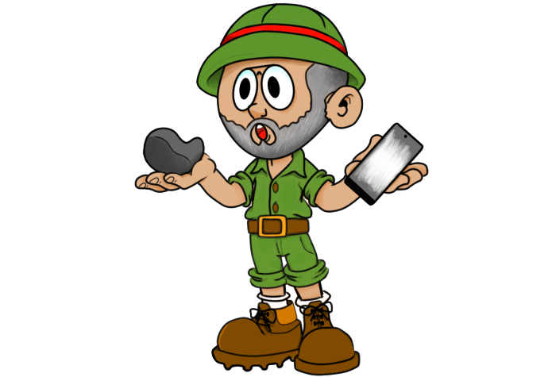

<div>
   <!-- <div class="sous" #myPanel ></div>-->
<div class="mainBarCompBox">  
<div class="mainBarComp">
    <div class="subComp">
        <carousel id="1" [slides]="slides"></carousel> 
    </div>
    <div class="card text-center">
        <div class="card-header">
          <ul class="nav nav-pills card-header-pills">
            
            <a [routerLink]="'/home'" class="nav-link">{{'Home'|translate}}</a> 
           
            <li class="nav-item" (click)="ChangeOnMainPageT()">
              <a class="nav-link" [routerLink]="[ '/map']">{{'Map'|translate}} </a>
            </li>
            <li class="nav-item" (click)="ChangeOnMainPageF()">
              <a class="nav-link" [routerLink]="[ '/map/caminho']">{{'Routs'|translate}}</a>
            </li>
            <!--<li class="nav-item" (click)="ChangeOnMainPageF()">
              <a class="nav-link" [routerLink]="[ '/map/control']">{{'Controllers'|translate}} </a>
            </li>-->
          </ul>
        </div>
        <router-outlet></router-outlet>
    </div>
    <div *ngIf="onMainPage">
        <div class="card-body">
            <div class="card-body">                          
                <div *ngIf="newDefInc && !newDef1">
                    
                    <div class="card">
                        <div class="card-header">{{'NewRoute'|translate}}</div>
                        <div class="card-body">
                          <p>
                            {{'crRoutes'|translate}} <a href="https://geo5solutions.blogspot.com/2020/07/ajuda-ao-utilizador.html">{{'this'|translate}}</a> {{'tutOfHowto'|translate}}
                      </p>
                      <div class="row">
                        <div class="col">
                            <button id="new" class="btn btn-success" (click)="definirCaminho()" >{{'New'|translate}}</button>
                        </div>   
                        </div><br>    
                        </div>
                      </div>
                <!--<app-formpoliline (newDirectionAdded)="newDirectionAdded($event)"></app-formpoliline>-->
                </div>
                <br>
                <div *ngIf="!newDefInc && !newDef1" >
                    <form #mForm="ngForm" (ngSubmit)="definirC1(Title.value,Description.value)">         
                        <div>
                              <label for="Title">{{'TitleofRoute' | translate}}</label>
                              <input type="text" class="form-control" #Title ngModel name="Title" id="Title" aria-describedby="TitleHelp" placeholder="{{'EnterTitle'|translate}}" required>
                              <small id="TitleHelp" class="form-text text-muted">{{'Titleclue'| translate}}</small>
                        </div>
                        <div class="form-group">
                              <label for="Description">{{'BriefDescription'|translate}}</label>
                              <textarea class="form-control" #Description ngModel name="Description" id="Description" rows="3" placeholder="{{'SomeText'|translate}}" required></textarea>
                        </div>
                        <div>
                            <div class="alert alert-primary" role="alert">
                                {{'MapStartP'|translate}}<strong>{{'MapSReady'|translate}}</strong>
                            </div>
                            <div class="row">
                            <div class="form-btn">
                            <button  class="btn btn-success" [disabled]="!mForm.valid" type="submit">{{'Set'|translate}}</button>
                            </div>
                            
                            <div class="form-btn">
                                <button  class="btn btn-danger" (click)="abortChanges()">{{'Delete'|translate}}</button>
                            </div>
                        </div>
                        </div><br>
                    </form> 
                </div>
                <div *ngIf="!newDefInc && newDef1 && !newDef2">
                    <div class="alert alert-success" role="alert">
                        <strong>{{'SetStartP'|translate}}</strong><br>  {{'MapSReady'|translate}}
                    </div>
                    <div class="alert alert-primary" role="alert">
                            <strong>{{'SetWayPointU1'|translate}}</strong> {{'SetWayPointU2'|translate}}
                    </div>
                    <p>    
                    <button  class="btn btn-primary" (click)="definirC2WayP()" >{{'SetWayP'|translate}}<br></button>
                </p>   
                    <button  class="btn btn-success" (click)="definirC2()" >{{'Set'|translate}}</button>
                
                    <div *ngIf="wayPushed">
                            <div class="alert alert-success" role="alert">
                                <strong>{{'PointAdd'|translate}}</strong>
                            </div>
                    </div>
                </div>
                <div *ngIf="!newDefInc && newDef1 && newDef2">
                    <div class="alert alert-success" role="alert">
                        <strong>{{'SetStartP'|translate}} <br>
                            {{'CreatP'|translate}}</strong>
                    </div>
                    <app-formpoliline (newImagesAdded)="newImagesAdded($event)"></app-formpoliline>
                    <br>
                    <button  class="btn btn-success" (click)="finalizeSetDir()" >{{'Create'|translate}}</button>
                    <button  class="btn btn-danger" (click)="abortChanges()" >{{'Delete'|translate}}</button>
                </div>    
            </div>
        </div>            
    </div>
</div>  
    <agm-map
    #map
    (mapReady)="mapReady($event)"
    [mapTypeControl]='true'
    [latitude]="latitude" 
    [longitude]="longitude" 
    [zoom]="zoom" 
    [disableDoubleClickZoom]="true"
    (mapDblClick) ="showHMarker($event)"    
    (mapRightClick)="getOptions($event,infoWindowOption)"
    >
    <button id="Settings" mat-fab color="warn" (click)="showZones()">
        <mat-icon aria-hidden="true">map</mat-icon>
    </button>
    <button id="Markings" mat-fab color="primary" >
        <mat-icon style="transform: translate(+10%, -30%)" aria-hidden="true" (click)="hideShowMarkers()">
            <svg aria-hidden="true" focusable="false" data-prefix="fas" data-icon="tree" class="svg-inline--fa fa-tree fa-w-12" role="img" xmlns="http://www.w3.org/2000/svg" viewBox="0 0 512 512">
                <path fill="currentColor" d="M378.31 378.49L298.42 288h30.63c9.01 0 16.98-5 20.78-13.06 3.8-8.04 2.55-17.26-3.28-24.05L268.42 160h28.89c9.1 0 17.3-5.35 20.86-13.61 3.52-8.13 1.86-17.59-4.24-24.08L203.66 4.83c-6.03-6.45-17.28-6.45-23.32 0L70.06 122.31c-6.1 6.49-7.75 15.95-4.24 24.08C69.38 154.65 77.59 160 86.69 160h28.89l-78.14 90.91c-5.81 6.78-7.06 15.99-3.27 24.04C37.97 283 45.93 288 54.95 288h30.63L5.69 378.49c-6 6.79-7.36 16.09-3.56 24.26 3.75 8.05 12 13.25 21.01 13.25H160v24.45l-30.29 48.4c-5.32 10.64 2.42 23.16 14.31 23.16h95.96c11.89 0 19.63-12.52 14.31-23.16L224 440.45V416h136.86c9.01 0 17.26-5.2 21.01-13.25 3.8-8.17 2.44-17.47-3.56-24.26z"></path>
            </svg></mat-icon>
    </button>
    <button id="Explore" mat-fab color="warn" >
        <mat-icon aria-hidden="true" (click)="hideShowRoutes()">directions_walk</mat-icon>
    </button>
    <button id="Curiosity" mat-fab color="primary">
        <mat-icon aria-hidden="true" (click)="showHideCuriosity()" >not_listed_location</mat-icon>
    </button>
    <button id="GeoSpot" mat-fab color="warn">
        <mat-icon aria-hidden="true" (click)="showHideGeoSpots()" >tour</mat-icon>
    </button>


    <agm-info-window
        #infoWindowOption
        [latitude]="infoOptionLat" 
        [longitude]="infoOptionLng"  
        [disableAutoPan]="true" 
        [isOpen]="show2"
        >
        <app-map-cam-info (hideRoute)="hideRoutes()"></app-map-cam-info>
        </agm-info-window>
        
        <agm-marker 
        [animation]="'DROP'"
        *ngIf="showMarker"
        [latitude]="latitudeM" 
        [longitude]="longitudeM"
        [markerDraggable]="true"
        (drag)="markerDragEnd($event)"> 
        </agm-marker>

        <agm-marker 
        *ngFor="let marker of markers"
        [animation]= " mbounce  ? '' : 'BOUNCE'"
        [zIndex]="0.2"
        [latitude]="marker.latitude" 
        [longitude]="marker.longitude" 
        [markerDraggable]="false" 
        (markerClick)="clickedMarker(infowindow)"
        iconUrl = "{{marker.iconUrl}}"   
        >       
            <agm-info-window [disableAutoPan]="true" #infowindow>
                {{marker.info}}
            </agm-info-window>
        </agm-marker>
        
        <agm-marker
        *ngFor="let item of infoNotice"
        [visible]="curiosities"
        [latitude]="item.data.location.lat" 
        [longitude]="item.data.location.lng" 
        [markerDraggable]="false" 
        (markerClick)="clickedMarker(infowindow)"
        iconUrl = "../../assets/intPoint.png"
        >
            <agm-info-window [disableAutoPan]="true" #infowindow >
                <mat-tab-group>
                    <mat-tab label="Titulo">
                        
                        <nb-card>
                            <nb-card-header>
                                <h2><b>{{item.data.title}}</b></h2>
                            </nb-card-header>
                            <nb-card-body>
                                <h3>{{item.data.description}}</h3>
                            </nb-card-body>
                        </nb-card>
                        <div class="row">
                            <div class="col">
                                <p>Todo material é fornecido pelo Professor José Carlos Kullberg</p>
                                <p>Alguns Materiais têm Direitos reservados pelo que sua utilização só é permitida no Ambito de disciplina "APDC fct unl di" para fim de realização de projecto</p>
                            </div>
                            <div class="col">
                                
                            </div>
                        </div>
   
                    </mat-tab>
                    <mat-tab label="Imagens">
                        <div class="subComp">
                        <carousel id="2" [slides]="item.img"></carousel>
                        </div>
                    </mat-tab>
                    <mat-tab label="Carta Geologica">                         
                        <iframe [src]="item.data.mapLink | safe" type="application/pdf"></iframe>    
                    </mat-tab>
                    <mat-tab label="Noticia Explicativa">
                        <iframe [src]="item.data.noticeLink | safe" type="application/pdf"></iframe> 
                    </mat-tab>
                  </mat-tab-group>
            </agm-info-window>
        </agm-marker>
        
        <agm-marker
        *ngFor="let item of geoSpots"
        [visible]="geoSp"
        [latitude]="item.data.location.lat" 
        [longitude]="item.data.location.lng" 
        [markerDraggable]="false" 
        (markerClick)="clickedMarker(infowindow)"
        iconUrl = "../../assets/geoMarker.png"
        >
        <agm-info-window [disableAutoPan]="true" #infowindow >
            <nb-card>
                <nb-card-header>
                    <h2><b>{{item.data.geoSpotName}}</b></h2>
                </nb-card-header>
                <nb-card-body>
                    <h3>{{item.data.description}}</h3>
                    <br>
                    <h4>#{{item.data.tags}}</h4>
                    <br>
                    <div class="subComp">
                        <carousel id="2" [slides]="item.img"></carousel>
                    </div>
                </nb-card-body>
            </nb-card>
        </agm-info-window>
        </agm-marker>

        <agm-marker 
        *ngFor="let res of reservaNatural"
        [latitude]="res.coord.lat" 
        [longitude]="res.coord.lng" 
        [markerDraggable]="false" 
        (markerClick)="clickedMarkerZone(infowindow,res.title)"
        [visible]="hide"
        iconUrl = "../assets/tree_pinlet-2-medium.png"   
        >       
            <agm-info-window [disableAutoPan]="true" #infowindow >{{res.title}}</agm-info-window>
        </agm-marker>
        <div *ngIf="explore">
        <agm-marker
        #DirMrk 
        *ngFor="let marker of waywayway"
        [id]="marker.id"
        [latitude]="marker.origin.lat" 
        [longitude]="marker.origin.lng" 
        [markerDraggable]="false"
        [visible]="!marker.visible" 
        (markerClick)="clickedDirection($event)"
        iconUrl = "../assets/hiking_pinlet-2-medium.png"   
        >    
        </agm-marker>
        </div>
        <agm-direction 
            #defWay id="defWay" 
            *ngFor="let way of waywayway" 
            [renderOptions]="renderOptions" 
            [markerOptions]="markerOptions" 
            [infoWindow]="thisInfoW" 
            [travelMode]="way.travelMode" 
            [origin]="way.origin" 
            [waypoints]="way.waypoints" 
            [destination]="way.destination" 
            [visible]="way.visible">
        </agm-direction>
        
            
       

        <agm-polyline  [strokeColor]="'red'" *ngIf="newPolly">
            <agm-polyline-point  *ngFor="let marker of dirWaysP" [latitude]="marker.lat" [longitude]="marker.lng">
            </agm-polyline-point>
        </agm-polyline>
        <agm-polyline  [strokeColor]="'red'" *ngIf="show">
            <agm-polyline-point  *ngFor="let point of cc" [latitude]="point.latitude" [longitude]="point.longitude">
            </agm-polyline-point>
        </agm-polyline>
        <agm-marker *ngFor="let point of cc" [latitude]="cc[0].latitude" label="s" [longitude]="cc[0].longitude" [markerDraggable]="false" (markerClick)="clickedMarker(infowindow)" [visible]=show>       
            <agm-info-window [disableAutoPan]="true" #infowindow>
                <strong>Trilho Castrejo</strong><br>
                
                </agm-info-window>
        </agm-marker>
        <agm-polygon #poly (polyClick)="clikedPoly($event,poly)" [visible]="(show )" [paths]="dirPolygon" [editable]=false [fillColor]="'green'" [strokeColor]="'green'" >
           
        </agm-polygon>
    </agm-map>


    <ngb-carousel class="modal" *ngIf="imagesFlag">
        <ng-template *ngFor="let item of images" ngbSlide>
        <div class="picsum-img-wrapper">
            
        </div>
        </ng-template>    
    </ngb-carousel>
    <ngb-carousel class="modal" *ngIf="urisImFlag">
        <ng-template *ngFor="let itemd of urisIm" ngbSlide>
        <div class="picsum-img-wrapper">
            
        </div>
        </ng-template>    
    </ngb-carousel>

</div>